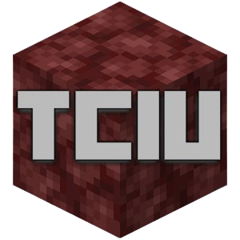

Trans-Continental Iceway Union
We Run EMC's Largest Organized Nether Iceway
Links
Discord (under construction)
Trans-Continental Iceway Map (under construction)
Non-TCI Map (Nether) (under construction)
Non-TCI Map (Overworld) (under construction)
Link to EMC wikipage
Donate (under construction) (gold?)
We are the Trans-Continental Iceway Union, an organization for the Minecraft server EarthMC. For more information, please join our Discord server below. For the Trans-Continental Iceway (TCI) map, look above. Yes, the website has loaded correctly. It's pretty, isn't it?
The TCIU is responsible for paving and maintaining the Trans-Continental Iceway, Terra Nostra's first and largest organized Nether iceway system. You can find the map for our system above. Please look at the key located on the map, which identifies the status and information for each stop and intersection. It is also our mission to map non-Trans-Continental Iceways in the Nether and Overworld for ease-of-access use by all the players of EarthMC.
The TCIU has four goals:
- Pave
- The TCIU paves iceways throughout the Nether with the objective of connecting the nations of EarthMC.
- Map
- The Trans-Continental Iceway was created to give the server a reliable, mapped out system of iceways for fast travel between nations without having to struggle with teleportation. Our map shows travelers every single stop, intersection, transfer, and line our system has to offer.
However, it is also the goal of the TCIU to explore and map out every non-TCI iceway and railroad in the Nether and the Overworld. This is done to fulfill our purpose of making non-teleportation travel on the server easier for every player.
- Farm
- Here’s a ground breaking statement: the TCIU, as an ice highway association, has to have a lot of ice. In particular, blue ice, which is the fastest type for boats to travel on. Therefore, the TCIU is also a major dealer and buyer in blue ice. We farm ice in the Arctic to sell to players, organizations, and civilizations, as well as to pave and maintain our iceways in the Nether. The TCIU will do business with players, towns, and nations involving packed or blue ice in exchange for gold. We tend to make good deals for new customers, and better deals for returning customers. For more information, please join our Discord server.
- Maintain
- As most of the TCI highways have already been paved, the current mission of the TCIU is to maintain these already-paved iceways. All TCI lines are constantly being renovated and repaired, and some stations are being transformed through beautification projects.
The Trans-Continental Iceway itself is a complex system of 324 stops, 244 towns, 79 transfers, 37 intersections, 23 lines, 15 merged line sections, two headquarters, and a non-biased mindset that benefits all the nations of Terra Nostra. Lines 1-16 run vertically across the map, from west to east. Lines A-F run horizontally across the map, from north to south. A reminder that one block in the Nether is equal to eight Overworld blocks. Again, the full map that correlates the TCI to it's Overworld locations can be found above.
Below is the TCIU's Bill of Rights. All members of the TCIU are instructed to always follow the below bylaws.
- I will wear the vest. An unenchanted, dyed leather tunic is given to all TCIU members, which allows them to be identified as peaceful highway repair(wo)men. Members must, and are only allowed to, wear the tunic while on an assignment.
- I will not attack without reason. On EarthMC, PVP is turned on in the Nether. If a member is on the job and wearing the leather tunic, they are not to attack any other player, unless said player attacks first.
- I will not grief intentionally. Unintentional griefs are common when constructing iceways, so assume the best before you assume the worst. However, if you believe a TCIU member was responsible for a 3.1 or 3.2 that relates to a TCI iceway, contact EarthMC staff, then contact a TCIU high rank. For all other proximity and wilderness griefs, contact EarthMC staff.
- I will be kind. The actions of our members directly reflect onto how EarthMC players view the TCIU as an organization. We are by no means telling our members to be pacifists, but treating any other player as complete garbage for no good reason will never be tolerated. Members only have to abide by this bylaw while on assignment (wearing the tunic) or while chatting in the TCIU Discord server. To report server rule-breaking activity, contact EarthMC staff.
- I will not build a casino stop. The TCIU will make our stance on this very clear: We will not, and will never, build a stop to a town whose sole purpose is running a casino. "But what about Las Vegas?" The TCI still serves towns with casinos, as there are still players with homes who reside in said towns. If the only major goal of your town is to run a casino, the TCIU will not be working with your settlement.
- I will be logical. By "logical," we mean "not doing anything that will cause unnecessary conflict." If you believe something you are doing may cause a unneeded problem, there are three ways to prevent it: think outside of the box, ask someone who does know a solution, or don't do it at all.
- I will not build a stop to the following towns: Rejected TCI towns can be found here. List will be continuously updated.
Our main headquarters can be found in Sub-Saharan Africa on TCI Line E at the Overworld coordinates (6940, 3682). Our second headquarters, currently being planned for the Arctic, is not available.
If you have any questions, comments, or concerns, join our Discord server, seen at the top. If you are the leader/councilor of a settlement or nation and have an inquiry, DM ron20233 on Discord or /mail send RobloxModeration on EarthMC.